Birdwatching
Birdwatching 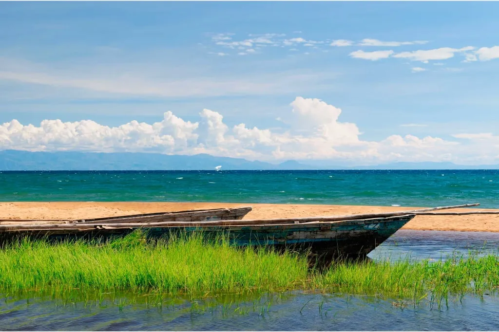
The western region of Tanzania encompasses vast protected areas that are home to large bird populations. Despite being less frequented by people going on Tanzania birding tours and receiving less tourist attention compared to the national parks in northern Tanzania and reserves closer to the Indian Ocean, this area holds its own allure. While the species diversity may not appear as extensive as in the more explored national parks and reserves, there are fascinating sceneries and wildlife to be discovered here, including bird species more commonly associated with Central Africa than East Africa. Of particular interest are the national parks and forest reserves surrounding the long lakes of the Rift Valley that offer many opportunities for exploration and exciting sightings of rare and beautiful birds.
If you are interested in the most popular destinations in Tanzania, we invite you to explore the wonderful birds of Serengeti and Ngorongoro, along with the avifauna of the mountain National Parks of Arusha and Kilimanjaro. The protected areas of Mikumi, Nyerere, and Selous also offer remarkable birdlife encounters. Additionally, the breathtaking views and diverse bird species found in Zanzibar and Dar es Salaam further enhance the appeal for bird enthusiasts looking to embark on a memorable birding trip to Tanzania.
Katavi National Park
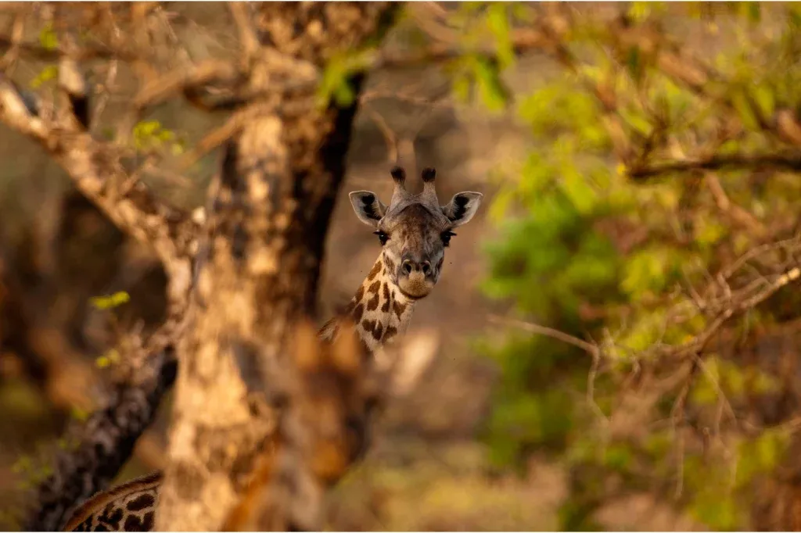
Katavi is a large national park located in western Tanzania. The area was once the hunting grounds of Otto von Bismarck - the chancellor of the German Empire in the 19th century, then it became a sanctuary where regulated hunting continued. Today it is a protected national park, which is located in a remote region, and therefore is rarely visited by tourists. Many of its areas, like those in Ruaha National Park, are poorly studied in terms of ornithology because of their remoteness. However, it is an extremely interesting place for birders. ebird.org lists only 230 species with confirmed sightings for this location, yet only 25 checklists were submitted so far. According to estimates, there might be more than 400 species of birds in the Katavi area and birders who come to this area can certainly make important contributions to understanding the local avifauna.
The NP is located in a valley, much of which is flood meadows and seasonal rivers and lakes that dry out partially or completely during the dry season. Almost all of the smaller rivers flow into the Katuma River, which in turn carries its waters to the southeast, into Lake Rukwa, ecologically connected to the park.
Waterfowl such as the Glossy Ibis (Plegadis falcinellus), African Openbill (Anastomus lamelligerus), Squacco Heron (Ardeola ralloides), and Great White Pelican (Pelecanus onocrotalus) are observed here, although there is no data on their numbers.
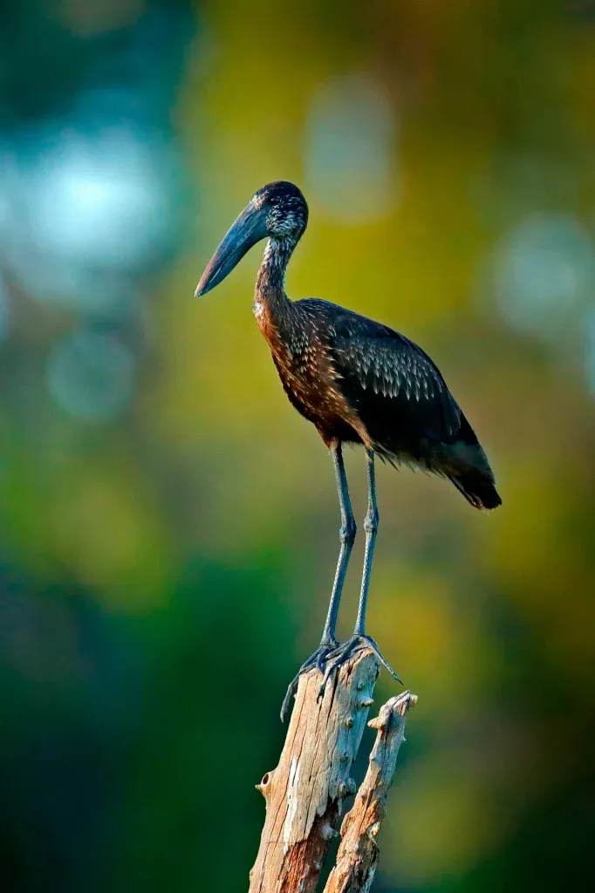
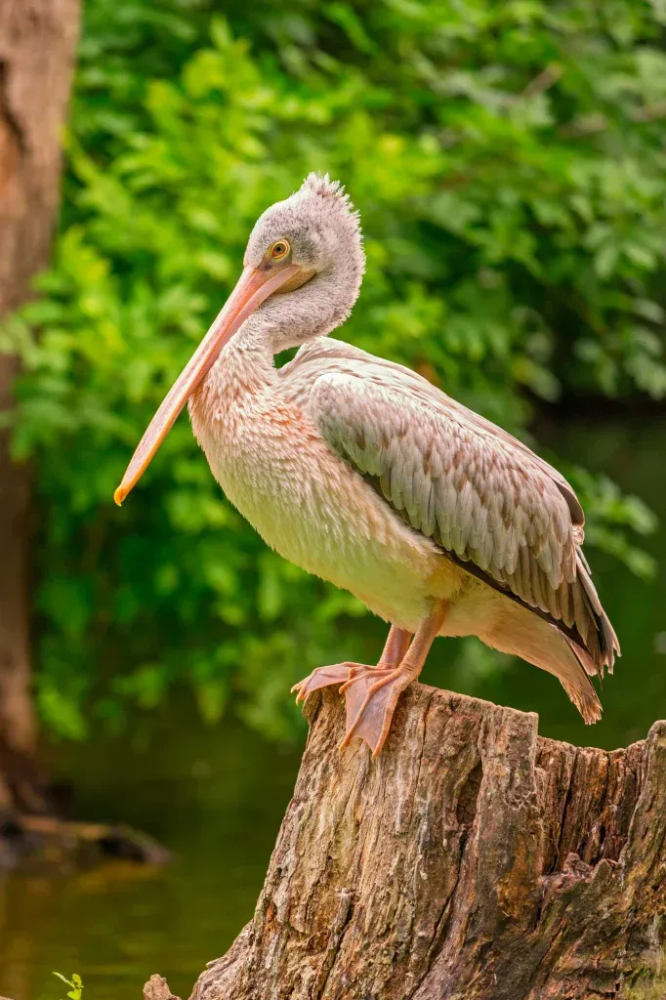
The Lesser Kestrel (Falco naumanni) and Tanzanian Masked Weaver (Ploceus reichardi) can also be seen here. The latter species is considered endemic to Tanzania, although in recent years it has been observed in neighboring Zambia near the border, not far from Lake Nyasa. Its favorite habitat in Katavi is the marshes. The weaver is not listed for this location on ebird.org, so being almost endemic, finding this strikingly conspicuous bird here will be of particular interest to birders traveling to western Tanzania.
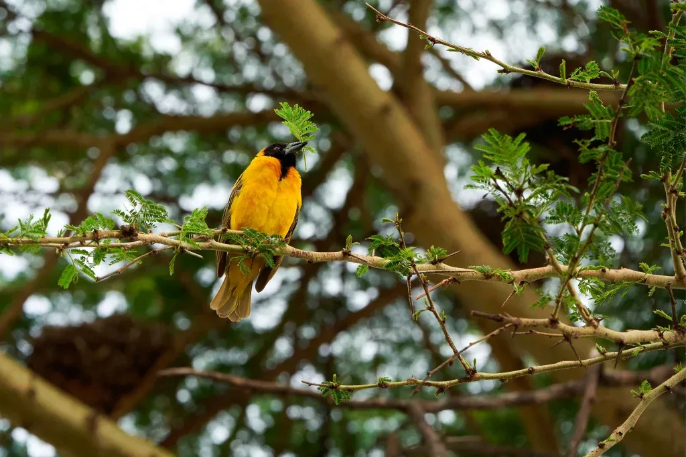
In Katavi, there have been exciting reports of the presence of the Shoebill (Balaeniceps rex). This species has a vulnerable status, and sightings of Shoebills in Tanzania are relatively rare. These birds inhabit deep marshes, usually in remote and inaccessible areas, often within papyrus thickets. Spotting and capturing a photograph of a Shoebill is considered a prized achievement for any birdwatcher. The wetlands within Katavi might offer promising opportunities to encounter this elusive bird. However, the solitary nature of Shoebills adds to the challenge of finding them.

The Shoebill also known as the Whalebill remains the only representative of shoebills in modern times, so named for the resemblance of its massive beak to a shoe or to the head of the marine mammal. Only pelicans and some large storks have longer beaks. But no one else has beaks wider, i.e. larger in circumference. The beaks of shoebills are quite heavy, so birds even have to put them on their chests when resting. All body parts of these birds are large, and they themselves are big - some individuals are known to reach a height of 152 centimeters (60 inches). At the same time, the head of the Shoebill is disproportionately small.
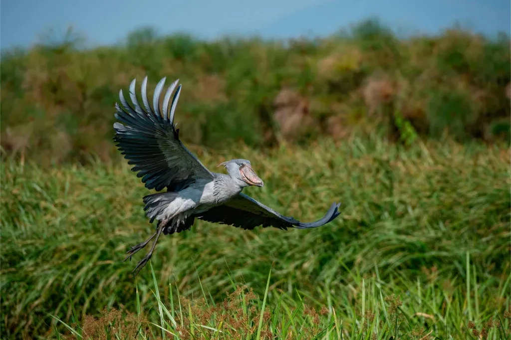
The sounds that Shoebills make are also interesting. In general, these birds are silent, but sometimes you can hear from them something similar to a cow's mooing. But the chicks, when they ask for food, make sounds very similar to human hiccups. More often, Shoebills simply bang their beaks, interacting with each other.
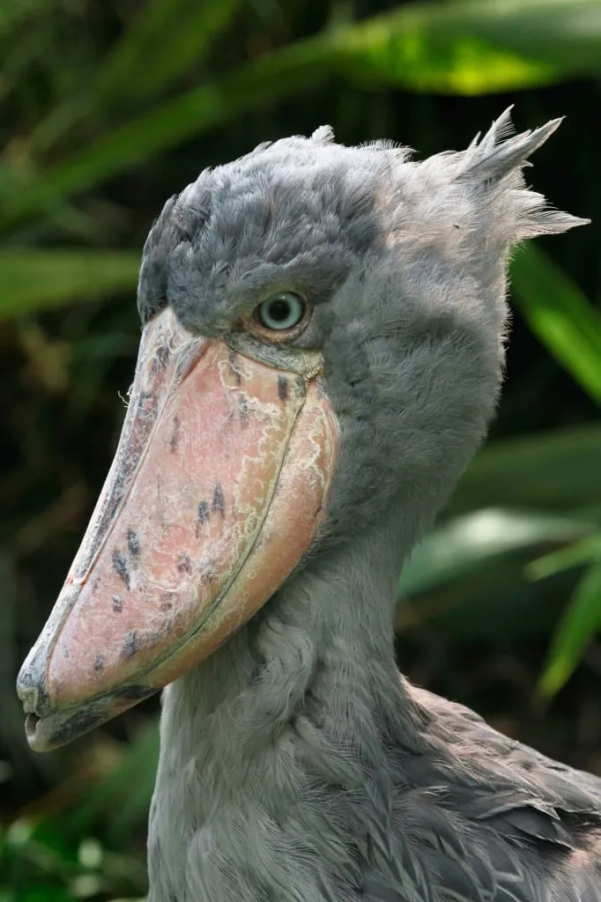
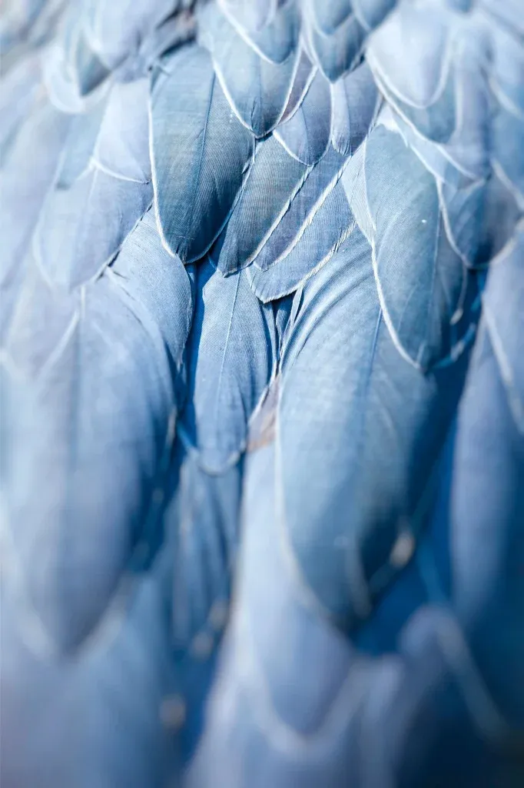
The Shoebill has amazingly beautiful plumage, particularly noticeable when the bird lies still. Those fortunate enough to witness it in its natural habitat are truly privileged. In the 1970s, the best ornithological researchers in Africa regarded the Shoebill as one of the top five birds they desired to encounter, despite the challenge of this endeavor. Today, with its global population in decline and numbering no more than 5,300 individuals, the desire to witness this magnificent bird has only intensified.
Within Katavi National Park, one can observe an array of captivating avian species, including the African Skimmer (Rynchops flavirostris), Racket-tailed Roller (Coracias spatulatus) with its pale blue abdomen and long forked tail, Stierling's Woodpecker (Dendropicos stierlingi), Kurrichane Thrush (Turdus libonyana), Miombo Rock Thrush (Monticola angolensis), and Broad-tailed Paradise Whydah (Vidua obtusa) with its resplendent tail.
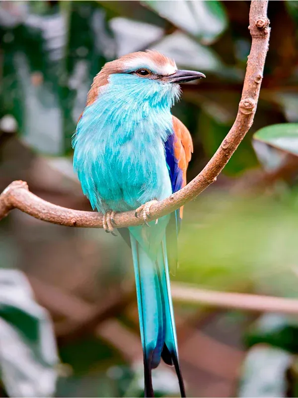
In the western and southern parts of Tanzania, you can find the Arnot's Chat (Myrmecocichla arnotti). The second part of its scientific name - arnotti comes from the collector's surname, Arnott, as mentioned in the species' initial description. Interestingly, the collector's actual last name was spelled with a single "t" - David Arnot. However, the name recorded by ornithologists has remained unchanged over time. As it often happens, what they have written down with a bird's feather cannot be cut down with an axe.

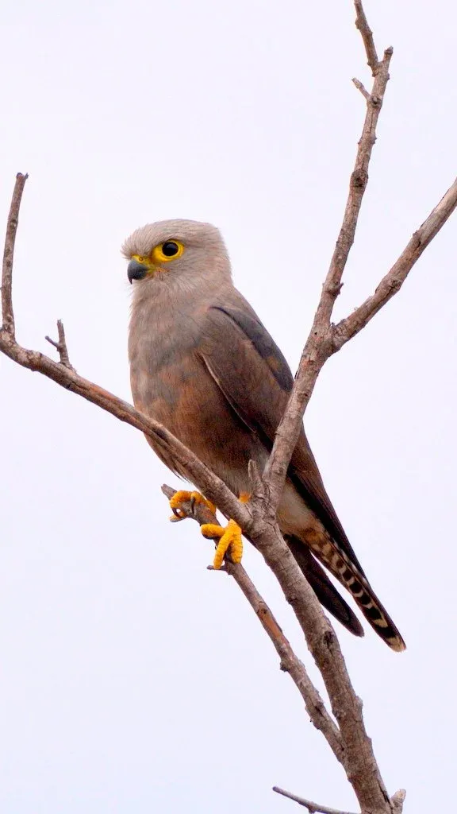
The Dickinson's Kestrel (Falco dickinsoni) can still be found in this region of Tanzania, although its presence is no longer observed further north in the western parts of the country. Overall, Katavi National Park appears to be a fascinating and ecologically diverse location, offering ample opportunities for exploration. It awaits adventurous individuals who are not afraid to venture deep into the wetlands.
Lake Rukwa
Lake Rukwa, situated southeast of Katavi National Park, runs parallel to Africa's deepest lake, Lake Tanganyika. While Lake Rukwa is significantly shorter in length, it shares the same origin as part of the Great Rift Valley, considered a branch of it. The difference in depth between these lakes is striking. Lake Tanganyika reaches a maximum depth of 1,471 meters (4,826 feet) with an average depth of 570 meters (1,870 feet), whereas Lake Rukwa has an average depth of just over 3 meters (9.8 feet). It is not surprising, given its shallow depth, that there have been occasions when Lake Rukwa has dried up. Interestingly, some sources suggest that Lake Rukwa is home to the largest population of crocodiles in Tanzania.
Lake Rukwa receives inflows from several rivers but has no outflow. The lake is surrounded by swamps adorned with reed and papyrus thickets, while the adjacent meadows with low grass are often prone to flooding. These fertile habitats provide favorable conditions for a variety of bird species. However, concerns have been raised by environmentalists due to the recent discovery of significant helium deposits in the lake. Furthermore, since the mid-20th century, mining activities, including gold extraction, have led to the release of mercury into the lake. Reports have highlighted the substantial degradation of the local ecosystem caused by agricultural development, deforestation of coastal forests, and the construction of dams and irrigation systems along the rivers that feed Rukwa.
Over 350 bird species have been recorded on Lake Rukwa. However, due to the remote and inaccessible nature of the area, the available data may not be fully up to date. The Great White Pelican (Pelecanus onocrotalus) and other waterfowl are known to inhabit the lake. Standing at a height of 180 centimeters (5.9 feet), the Great White Pelican has a beak measuring between 29 and 47 centimeters (11.4 to 18.4 inches) in length. Its expansive throat pouch can easily accommodate large fish from the cichlids family, which is a preferred delicacy, or even the chick of another bird species. These magnificent birds are true carnivores. It is noteworthy that the throat pouch of a Great White Pelican can hold up to four kilograms (8.8 pounds) of fish at a time!
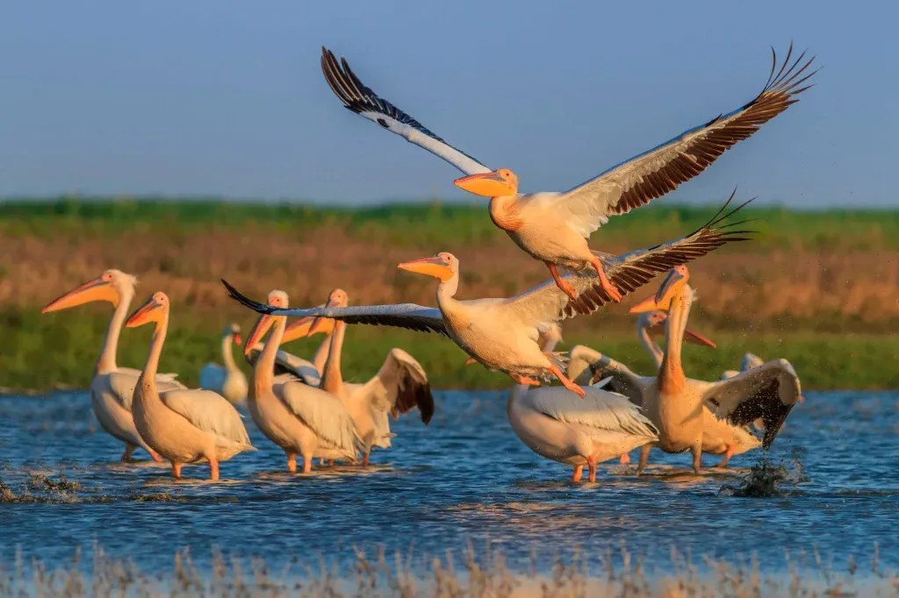
Lake Rukwa is renowned as the largest habitat for Great White Pelicans (Pelecanus onocrotalus) in Africa. This expansive lake is home to an impressive breeding colony of these majestic birds, numbering in the tens of thousands. The most recent observations mention a figure of 80,000 pelicans. Great White Pelicans prefer shallow freshwater reservoirs with relatively warm water, which makes Lake Rukwa an ideal environment for them.
The lake's waters also attract a diverse range of other bird species. Among them are White-winged Terns (Chlidonias leucopterus), Spur-winged Geese (Plectropterus gambensis), and Glossy Ibises (Plegadis falcinellus). Additionally, the African Skimmer (Rynchops flavirostris) can be observed here, easily identified by its prominent orange beak that is visible even from a distance. Skimmers typically form colonies consisting of several dozen pairs and often interact with various bird species, offering a rewarding experience for avid birdwatchers.
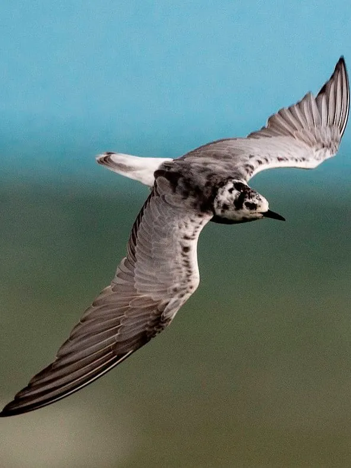
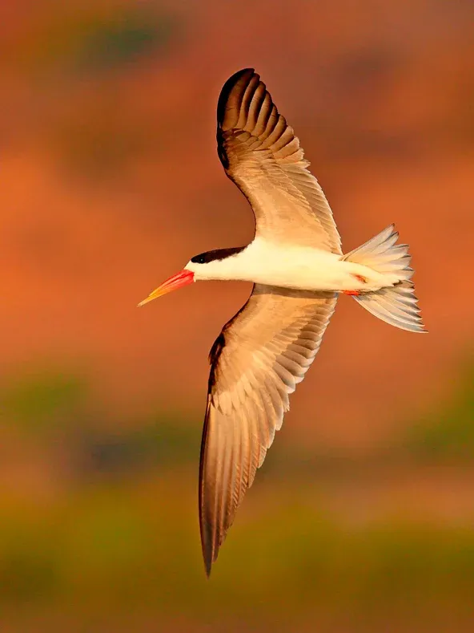
In the vicinity of Lake Rukwa, you have the opportunity to spot the Tanzanian Masked Weaver (Ploceus reichardi), an endemic species of Tanzania. These weavers are particularly fond of marshy habitats, especially areas with dense reed thickets. They tend to form large colonies and their vibrant olive-yellow backs and flanks stand out prominently against the surrounding green grass.
While exploring the lake and its surroundings, there have been very occasional sightings of the elusive Shoebill (Balaeniceps rex), although its presence is unlikely. Reports of Lesser Flamingos (Phoeniconaias minor) have also been noted, but these are likely to be migratory visitors rather than permanent residents of the lake. Other bird species that have been observed at Lake Rukwa include the Lesser Kestrel (Falco naumanni), Corn Crake (Crex crex), Pallid Harrier (Circus macrourus), and occasionally, the Black-winged Pratincole (Glareola nordmanni). Additionally, the shallow depths of the lake make it an attractive habitat for the Wattled Crane (Grus carunculata).
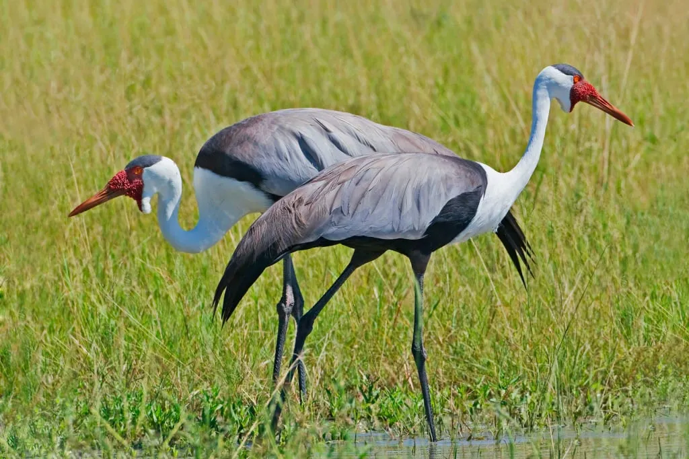
The wetlands play a vital role for this species. In total, there are only two crane species found in Tanzania: the Wattled Crane, and the Black Crowned Crane. Both crane species are endangered. The Wattled Crane (Grus carunculata) is doing slightly better than the Black Crowned Crane (Balearica pavonina), but it is still threatened by habitat loss resulting from wetland degradation. It is important to exercise caution and avoid getting too close to cranes, especially when they are raising their chicks, as they can become fearful and aggressive, and even attack people.
The lake valley is considered the southernmost habitat of Common Ostriches (Struthio camelus) in the country. These birds are attracted to open spaces with grass not exceeding one meter (3.3 feet) in height. While water is not particularly interesting to ostriches, as they obtain enough liquid from their food, it is worth noting that the lake valley provides suitable habitat for them.
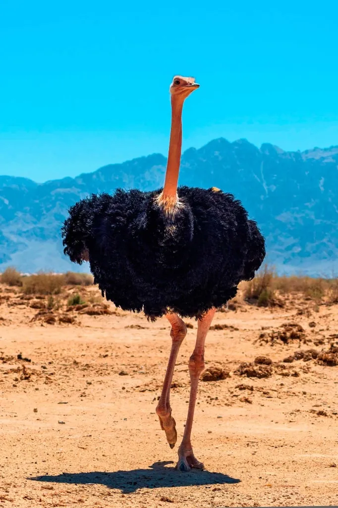
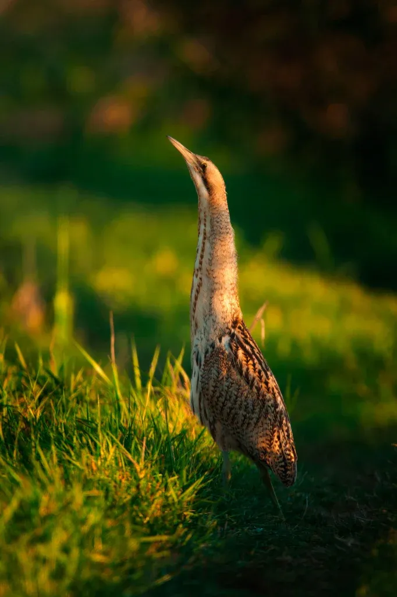
Reeds on flooded lands also attract the Eurasian Bittern (Botaurus stellaris), a typical wading bird that is really good at hiding within reedbeds. Its plumage is specifically designed to blend in with dry stalks, especially when it stands on one leg with its neck extended and head up. By mimicking a cluster of reed stalks, the bittern can maintain this pose for extended periods, either patiently stalking fish, frogs, and various insects or remaining motionless when danger approaches.
The area is also frequented by the strikingly beautiful Black Storks (Ciconia nigra). Spotting them near the lake would be a stroke of luck. These birds are known for their secretive nature - they avoid human presence, and much about their lives remains unknown. To catch sight of Black Storks, it is advisable to explore the southern and eastern shores of the lake, where they winter after migrating from Europe and Asia.
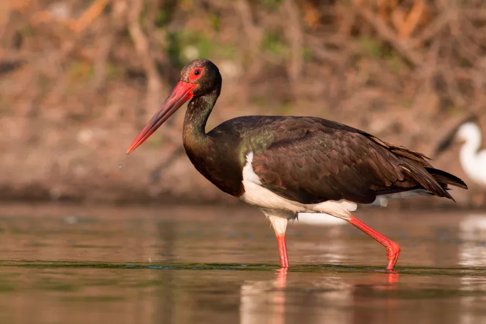
Other interesting species to look for on Lake Rukwa include the Baillon's Crake (Zapornia pusilla), also called the Marsh Crake. It has an average length of 18 centimeters (7 inches) and weighs only 20-50 grams (0.7 to 1.8 ounces). You should look for it in thickets near water or on the water itself on floating plants. Other noteworthy species are the Bennett's Woodpecker (Campethera bennettii) and Nubian Woodpecker (Campethera nubica), as well as a small bird of prey called the Red-footed Falcon (Falco vespertinus).
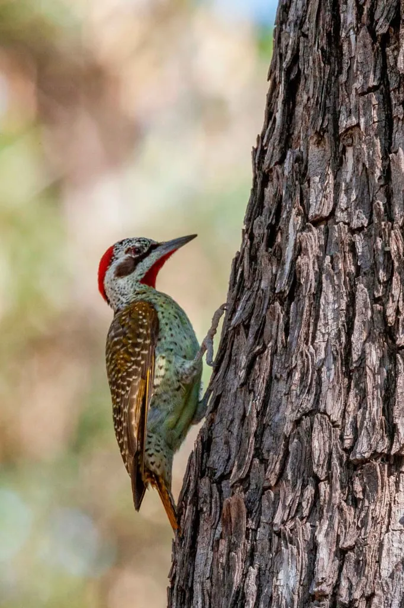
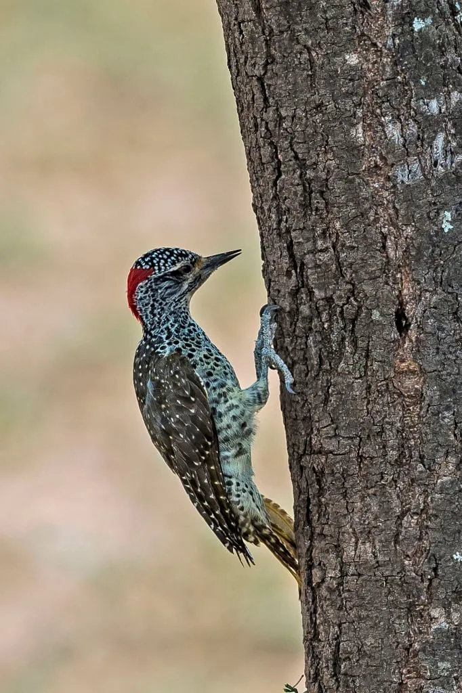
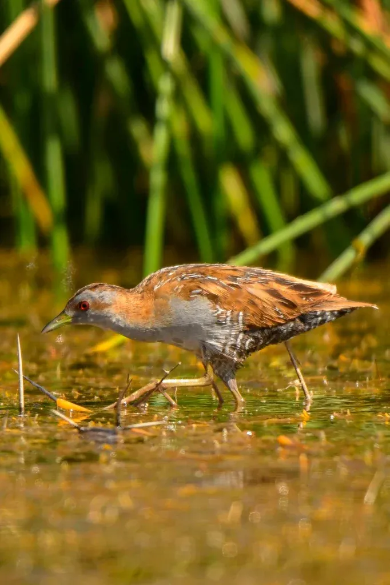
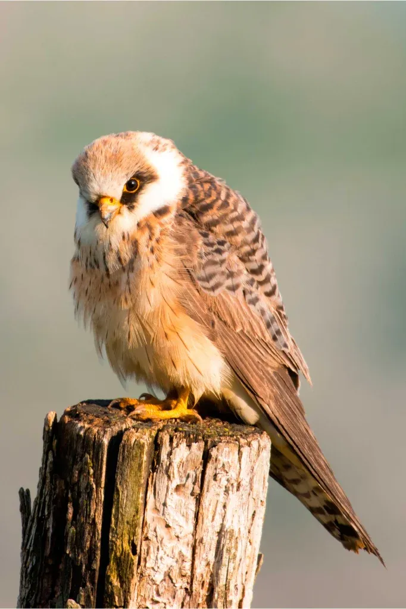
A population of White-tailed Larks (Mirafra albicauda) is known along the southeastern coast of Lake Rukwa. These larks have only a few isolated populations across Africa, and there is an ongoing discussion about the existence of subspecies. The local variant is called Mirafra albicauda rukwensis. These birds sing while in flight, producing melodic tunes that resonate as they hover approximately 30 meters (98 feet) above the ground. Afterwards, the White-tailed Lark descends rapidly, running a short distance to conclude its singing flight ritual.
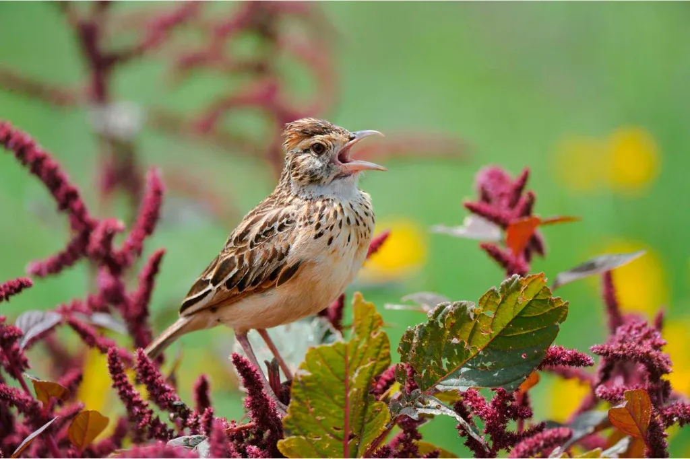
Loazi-Kalambo Forest Reserves and nearby areas
To the west of Lake Rukwa lies a mountain plateau known as Ufipa. It is nestled between two ancient Rift Valley lakes: Tanganyika and Rukwa. With an altitude exceeding 2,000 meters (6,562 feet), the plateau is enveloped by miombo forests that decorate its slopes. Within the plateau, there is a lake and marsh, along with several marshy valleys on the western side. What makes this area particularly interesting is the presence of many bird species more commonly associated with Central Africa rather than East Africa. The forest reserves and the rivers that traverse them attract diverse native bird populations.
One remarkable bird to observe in this region is the Denham's Bustard (Neotis denhami). Although they were once abundant on the plateau and considered the largest population in Tanzania, their current presence in the area is uncertain. Unfortunately, the species faces threats from expanding grazing pastures, and is at risk of extinction.
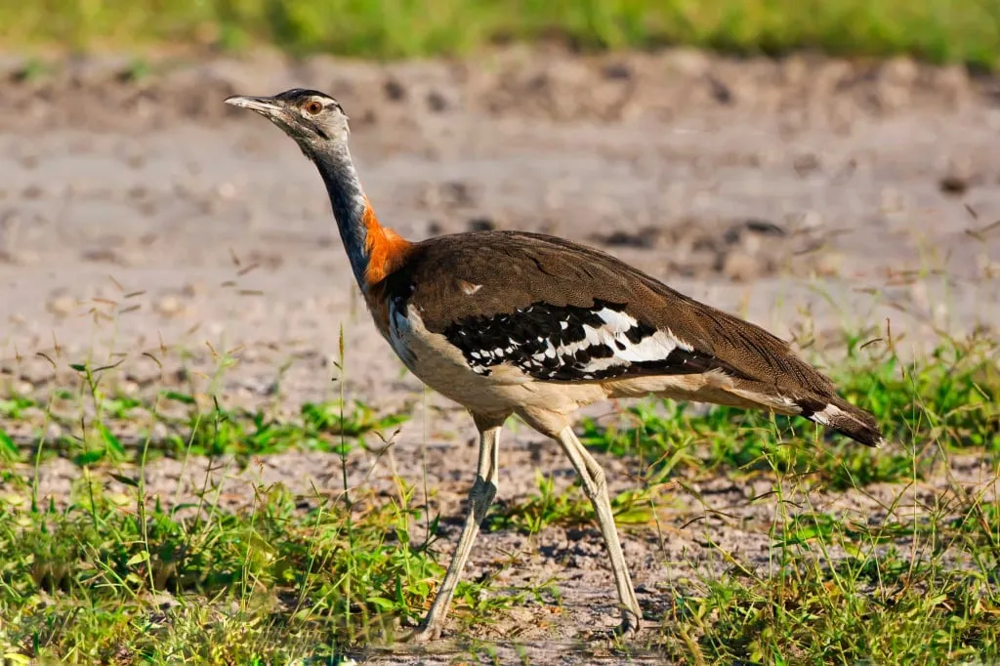
The Brown Firefinch (Lagonosticta nitidula), Angola Lark (Mirafra angolensis), and Laura's Woodland Warbler (Phylloscopus laurae) are other inhabitants of Central Africa that have been spotted in this area. Ornithologist Wolfrid Rudyerd Boulton named Laura's Woodland Warbler after his wife, who obtained the first specimen used for the bird's description. These three species reside along the southeastern shore of Tanganyika, representing the northernmost part of their ranges. They are challenging to find in other parts of the country, making the forest reserves of the Ufipa Plateau a unique location where one can observe these birds.
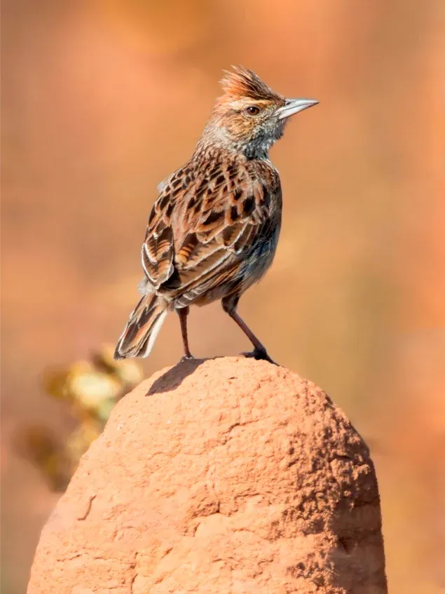
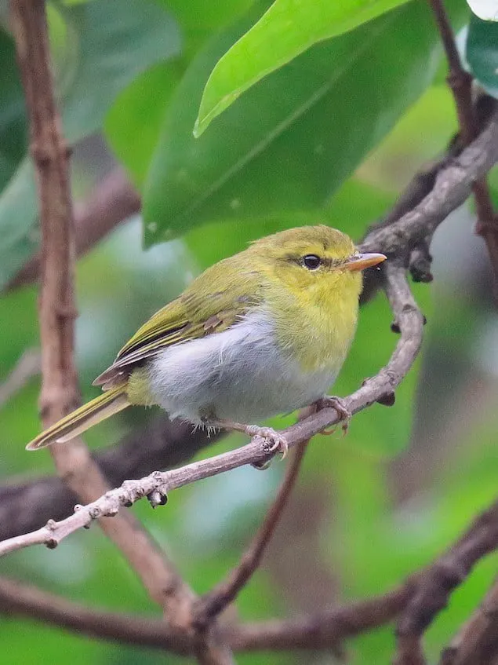
On the plateau it is possible to find the African Thrush (Turdus pelios) and Western Citril (Crithagra frontalis). Interestingly, their other populations are located far away in other parts of the country. The same can be said of the Black-lored Cisticola (Cisticola nigriloris) and the Yellow-streaked Greenbul (Phyllastrephus flavostriatus).
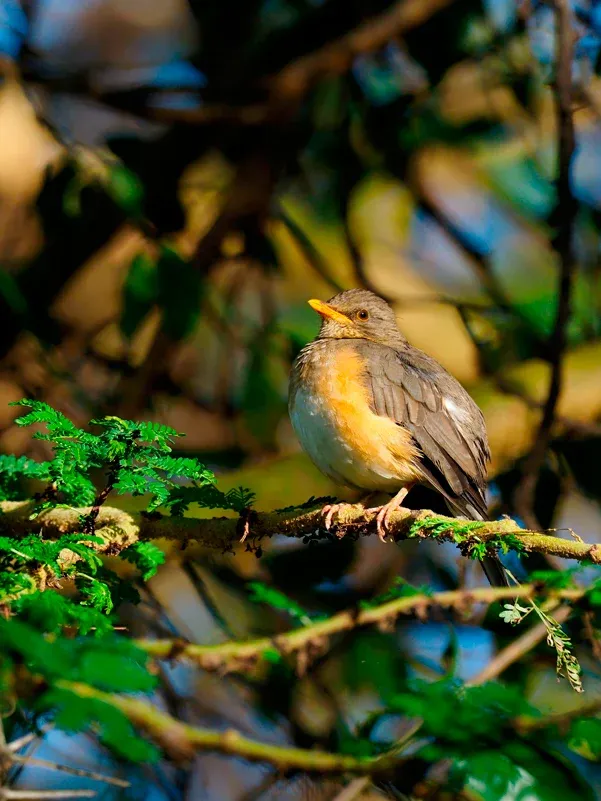
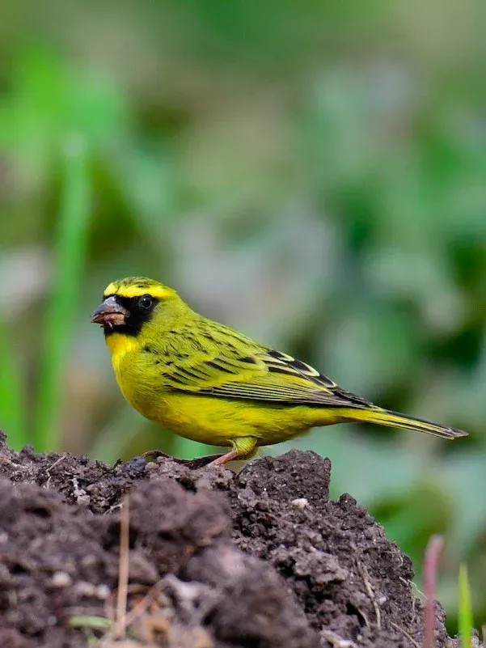
There is also the Fülleborn's Longclaw (Macronyx fuelleborni), an expressive songbird of the Motacillidae family. It is characterized by its yellow throat and chest, adorned with a black V-shaped band on its throat. This bird has two subspecies, with one exclusively inhabiting southwestern Tanzania, while the range of the second subspecies extends to neighboring countries. Both subspecies can be found in Loazi-Kalambo Forest Reserves and nearby areas. Interestingly, the name of this bird pays tribute to Friedrich Fülleborn, a German doctor who specialized in tropical diseases and parasitology. Dr. Fülleborn conducted significant research in these remote regions during the time when mainland Tanzania was under the control of the German Empire. His name is also honored in the scientific names of other species, including the Fülleborn's Cichlid, an endemic fish of Lake Nyasa, and the Trioceros fuelleborni, a chameleon endemic to Tanzania.
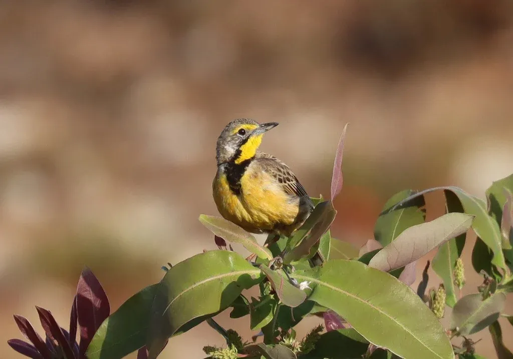
Another very beautiful bird living in the forests on the plateau is the Miombo Pied Barbet (Tricholaema frontata). This species is again rather typical of Central Africa, dwelling in dense miombo forests, which is suggested by its English name. It is interesting that Miombo Pied Barbets live here side by side with Red-fronted Barbets (Tricholaema diademata), without crossing populations in any way. These are related species, but the latter tend to choose more open spaces - meadows with freestanding trees and thickets of acacia trees.
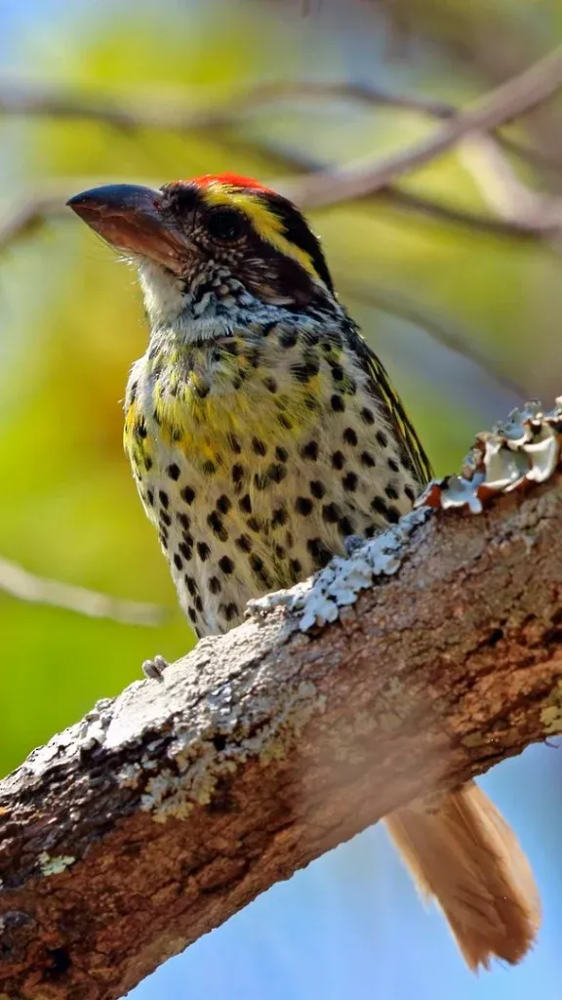
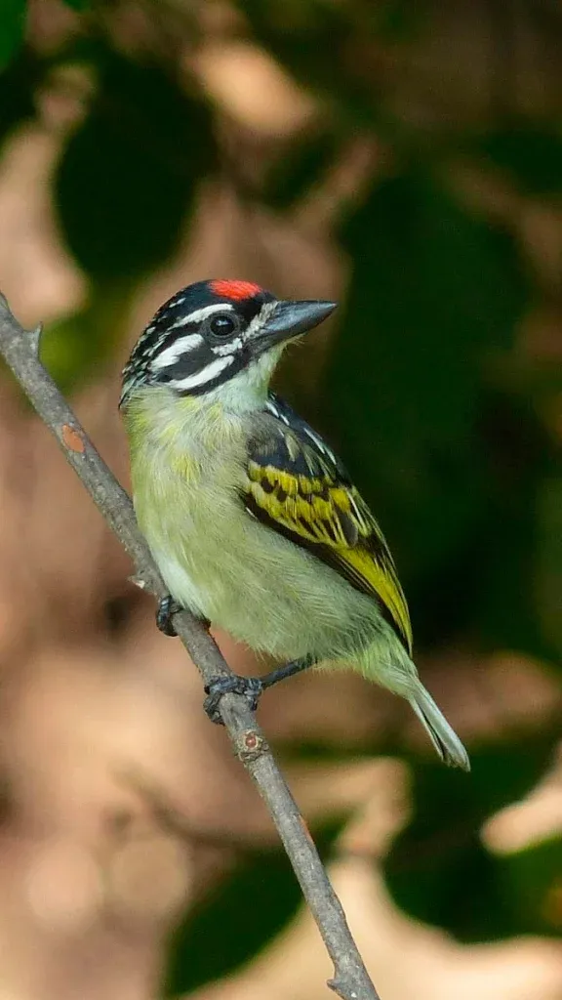
The forests of the Ufipa Plateau are home to the incredibly beautiful Anchieta's Sunbird (Anthreptes anchietae) and the Bocage's Akalat (Sheppardia bocagei) - another two typical Central African residents. Not much is known about the latter bird, so the prospect of finding it in the Loazi-Kalambo Forest Reserves would be exciting for any birder.
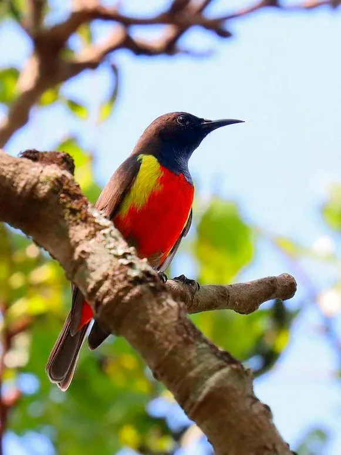
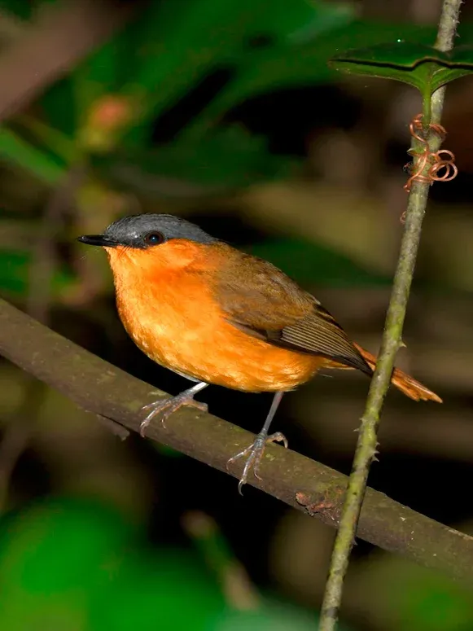
Two other representatives of Central and East African species, the Rosy-throated Longclaw (Macronyx ameliae) and the Locustfinch (Paludipasser locustella) settle in more open areas, especially in floodplains. Both species can be found in flooded meadows with low vegetation. Interestingly, Locustfinches lead almost permanently terrestrial lifestyles.
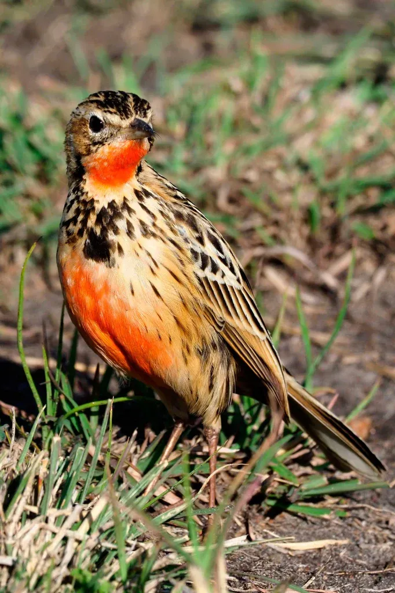
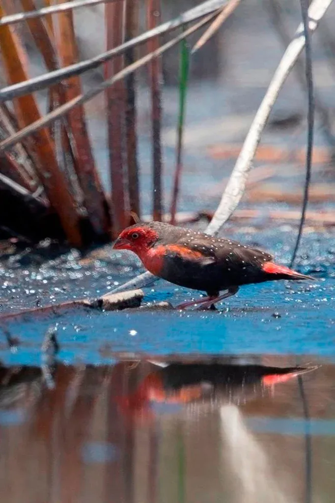
In these places, you can find many more interesting and unusual species, making it challenging to list them all. Let us mention as an example the Red-capped Crombec (Sylvietta ruficapilla), for which the forests of this plateau and the coast of Lake Rukwa are the northern extremes of its range. Lake Sundu, located on the plateau, attracts the Southern Pochard (Netta erythrophthalma), the Collared Pratincole (Glareola pratincola), and the Great Crested Grebe (Podiceps cristatus). This grebe is considered an increasingly rare species in East Africa. Of endemic species here, you can meet the Tanzanian Masked Weaver (Ploceus reichardi).
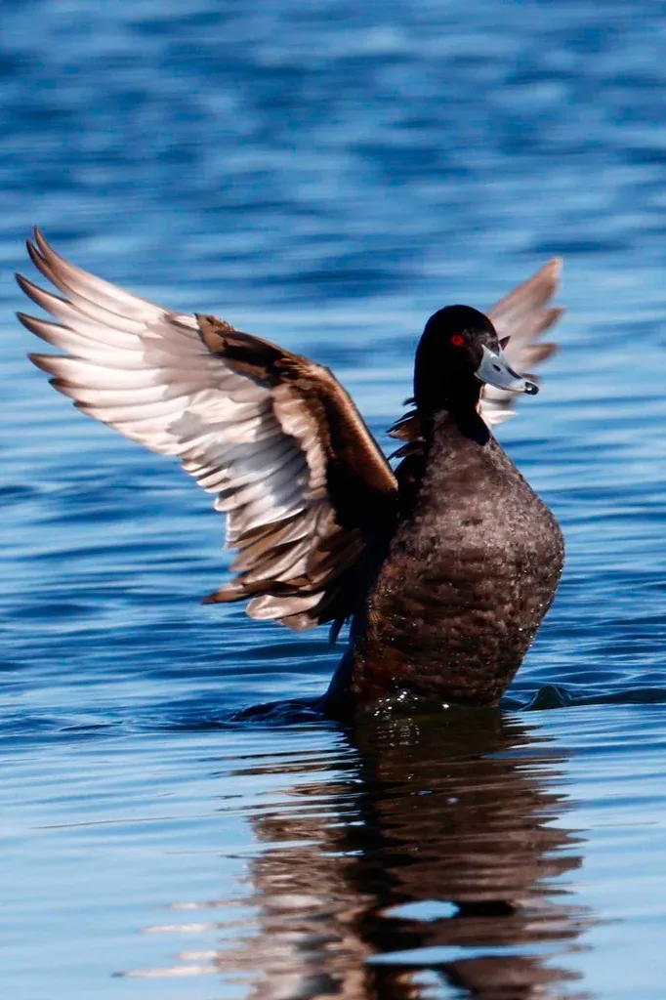
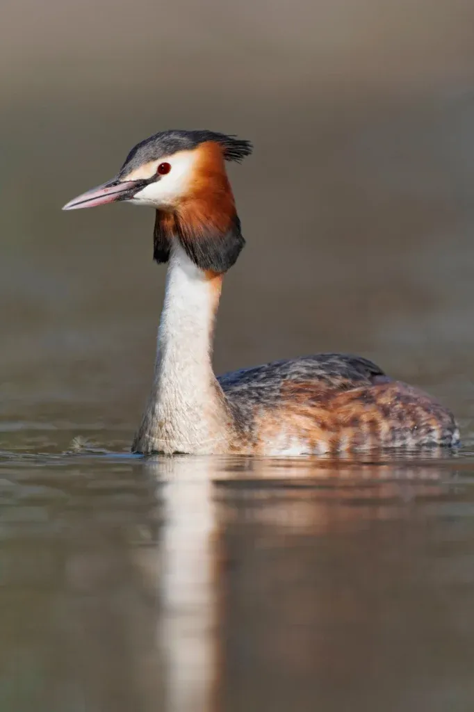
Mahale Mountains National Park
Mahale Mountains NP is located on the
eastern shore of Lake Tanganyika. It is a mountain range covered with
forests. There are not as many recorded species of birds here - only about
200. This is due, among other reasons, to the poor study of the region from
the ornithological point of view. It is assumed that the species diversity
of this zone is wider, so the national park is still waiting for its field
researchers and enthusiastic birders. Interestingly, this high-altitude
zone, like the Ufipa Plateau, is located to the east of the Tanganyika, but
the biomes of those locations are significantly different.
On the beautiful territories of the national park, you can find such birds as the Kungwe Apalis (Apalis argentea), the local subspecies of which is endemic to the area. The same can be said about subspecies of the following birds: Yellow-streaked Greenbul (Phyllastrephus flavostriatus), Yellow-throated Woodland Warbler (Phylloscopus ruficapilla), Yellow-bellied Wattle-eye (Platysteira concreta), Brown-chested Alethe (Chamaetylas poliocephala), and some others.
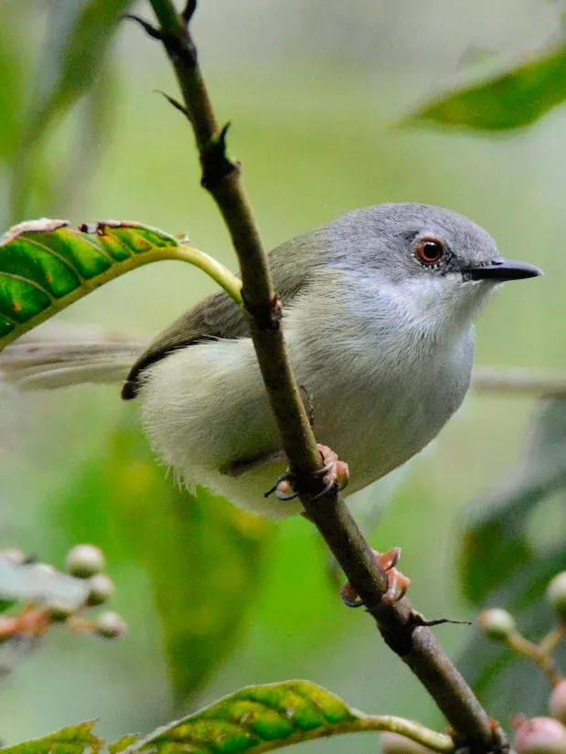
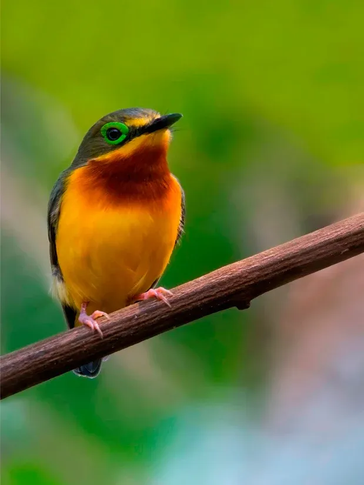
One species from the same list deserves a separate mention. It is a beautiful bird, with males displaying vibrant colors including yellow, green, blue, red, purple, and even metallic hues. We are talking about the Regal Sunbird (Cinnyris regius). Sunbirds are small birds with long beaks that bent downward. They flit from flower to flower and hover in the air while feeding. Sunbirds are considered the African-Asian counterpart to the world-famous American hummingbirds. More than 50 species of sunbirds are observed in Tanzania.
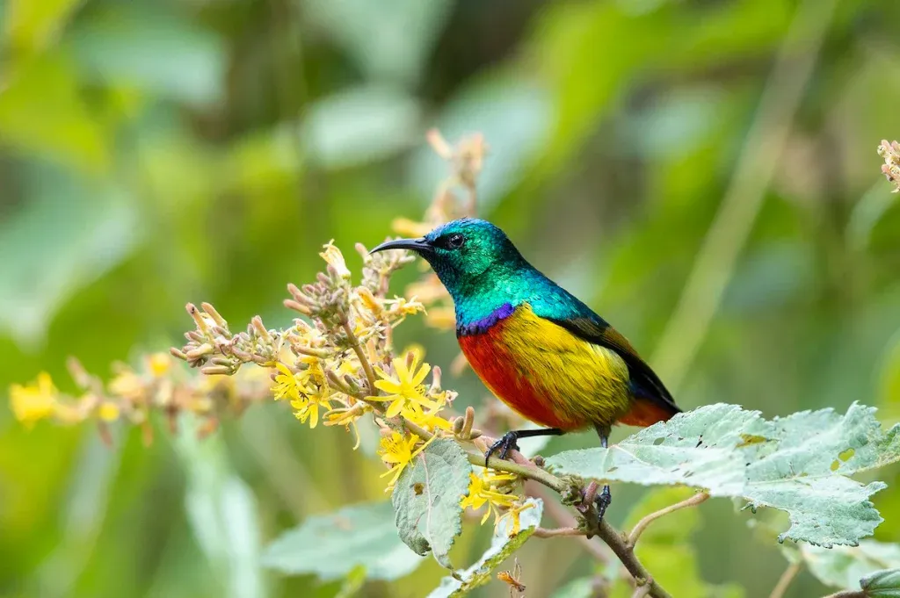
And another species living in the Mahale Mountains can be considered endemic. It is the Tanzanian Masked Weaver (Ploceus reichardi).
Other inhabitants of the NP’s forests on the banks of the Tanganyika River include the Grey Penduline Tit (Anthoscopus caroli). They have many subspecies, one of which was found in these places. And nearby, on the Ufipa Plateau, another subspecies of this tit resides.
A very rare bird for Tanzania is the Stuhlmann's Starling (Poeoptera stuhlmanni). It seems to be seen only on the coast of Lake Tanganyika. Almost the same applies to the Bamboo Warbler (Locustella alfredi). Not much is known about representatives of this species. It will be great if you manage to see them in Tanzania and mark your sighting on the map.
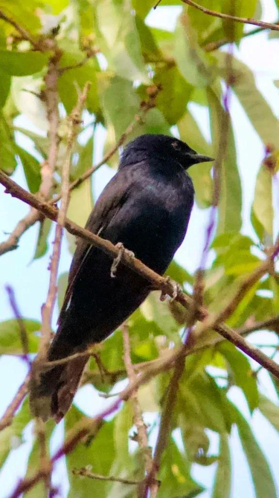
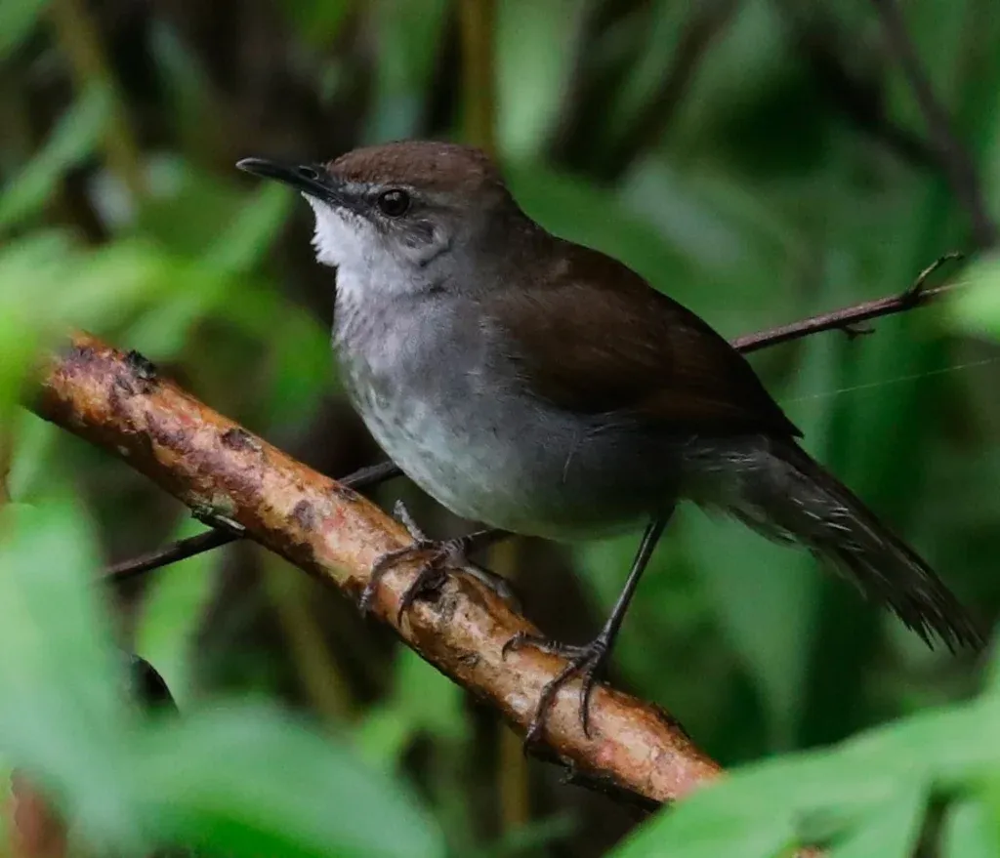
Other species observed at this place include Cinnamon-chested Bee-eater (Merops oreobates), Mountain Oriole (Oriolus percivali), Gray Cuckooshrike (Ceblepyris caesius), Waller's Starling (Onychognathus walleri), Sharpe's Starling (Poeoptera sharpii), and White-starred Robin (Pogonocichla stellata).
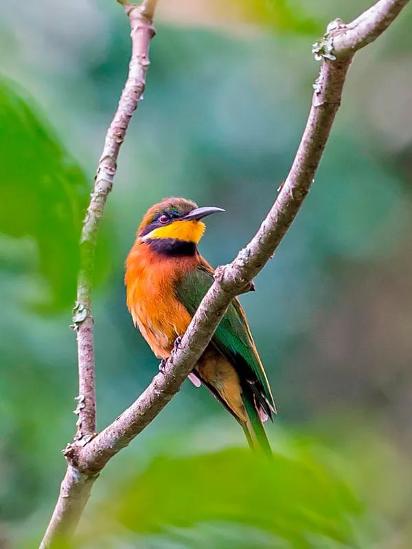
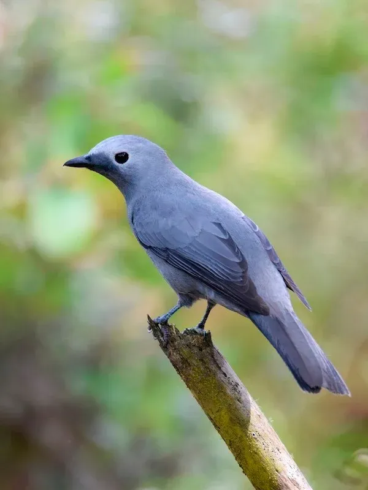
The Oriole Finch (Linurgus olivaceus) and the Southern Citril (Crithagra hyposticta) are conspicuous in the forests and surrounding areas of the Mahale Mountains. And then, of course, there are eye-catching sunbirds: the Bronze Sunbird (Nectarinia kilimensis) and the Forest Double-collared Sunbird (Cinnyris fuelleborni).
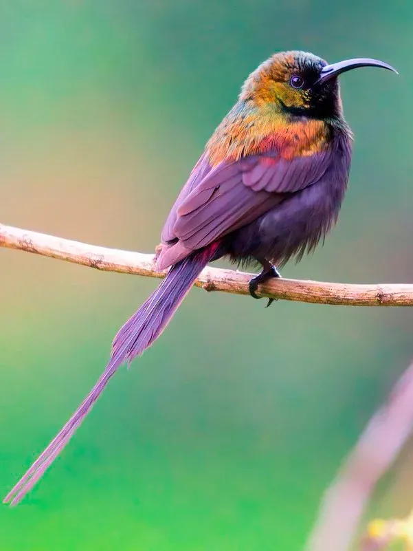
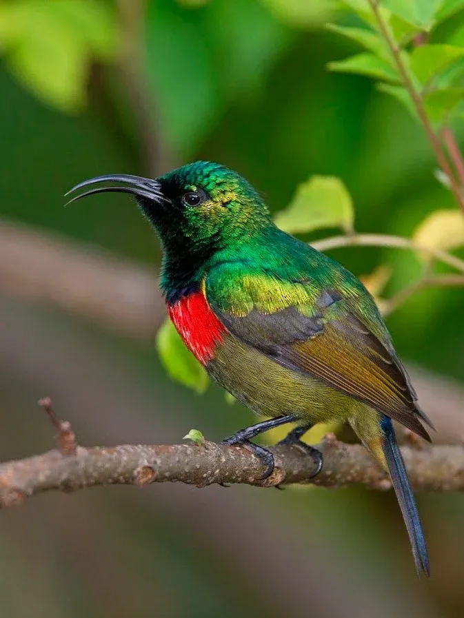
The Fine-banded Woodpecker (Campethera taeniolaema) is another interesting bird that can be found in this area. Notably, not everyone considers it a separate species, many sources classify it as a subspecies of the Tullberg's Woodpecker (Campethera tullbergi).
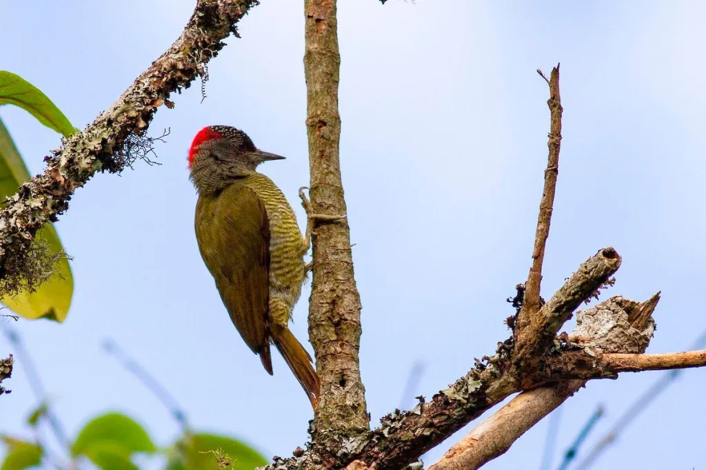
Ugalla River National Park
Fifty kilometers (31 miles) east of Katawi National Park is the little-known Ugalla River National Park, which was granted national park status in 2019. Before that, it was part of the Ugalla River Game Reserve for more than half a century. The river loops through the savannahs of central Tanzania, heading west to the swamps of Moyowosi and on into Lake Tanganyika. Such vast expanses filled with water, of course, attract many birds, including waterfowl. The challenge with this national park is that it is poorly studied in terms of ornithology. The Tanzanian National Parks Authority itself calls this area an undiscovered treasure of Africa.
There are very interesting birds here, for which the Ugalla River wetlands are the only habitat in all of East Africa. We are talking about Chestnut-headed Flufftails (Sarothrura lugens). Their range is considered fragmentary, that is, looking at its map, we will see tiny isolated fragments scattered all over the continent. This bird’s appearance has been described in detail, but we know strikingly little about their nests, eggs, and even chicks.
This is one of those rare species whose descriptions are not accompanied by pictures. We would love to show you what this bird looks like, but there are almost no photographs. Isn't it a worthwhile challenge for a dedicated birder to come to Tanzania, visit Ugalla River National Park, find the mysterious Chestnut-headed Flufftail and take some pictures that will immediately gain recognition in the birding community?
Populations of White-crowned Lapwings (Vanellus albiceps) and Corn Crakes (Crex crex) have been noted here. In addition, this area is considered the main habitat for Wattled Cranes (Grus carunculata) in Tanzania. Since the species is in a vulnerable position, the conservation of this population and the entire ecoregion is an important goal. The more birdwatchers come here, the more attention will be drawn to the struggling species.
In addition to these species, the NP is home to the African Openbill (Anastomus lamelligerus), African Darter (Anhinga rufa), and Great Egret (Ardea alba). These egrets are majestic and graceful birds, moving slowly or often freezing in one spot. Studies show that when an egret freezes, it is able to catch more prey than when it moves slowly. Great Egrets are especially beautiful just after molting when they grow long feathers sticking up their sides.
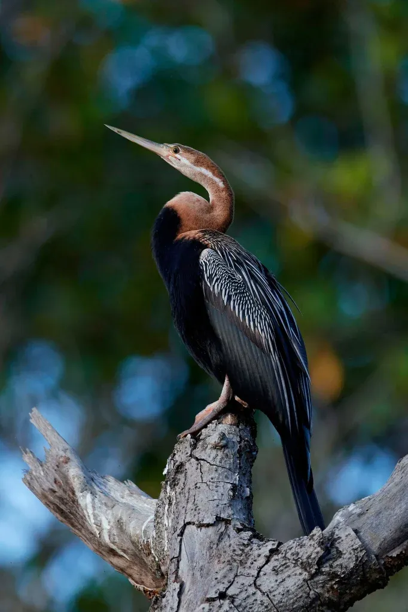
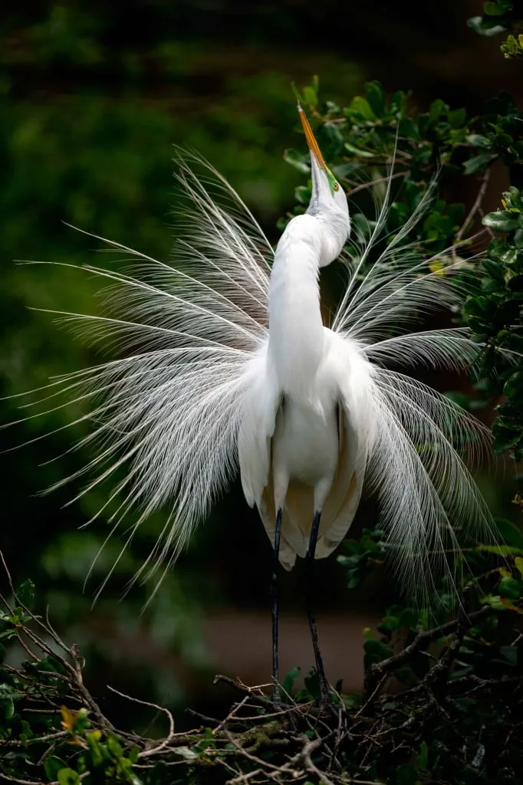
Kigosi and Moyowosi
Western Tanzania has an extensive protected area that plays an important role for local bird populations. It includes sections of Kigosi National Park, founded not long ago on the site of a game reserve, and Moyowosi, which remains in the status of a game reserve. Both areas are named after the rivers that run through their territories. There are three other rivers that altogether make up a large system of wetlands in this region. These are the same wetlands as in Ugalla River National Park. And they are as poorly studied.
Still, attempts have been made to estimate populations of native bird species here. There are records of the presence of Gull-billed Terns (Gelochelidon nilotica), White-winged Terns (Chlidonias leucopterus), White-backed Ducks (Thalassornis leuconotus), Rufous-bellied Herons (Ardeola rufiventris), Squacco Herons (Ardeola ralloides), Goliath Herons (Ardea goliath), as well as Purple Herons (Ardea purpurea) and Intermediate Egrets (Ardea intermedia). In addition to Intermediate Egrets, Great Herons (Ardea alba) were also seen here. Birds like herons and egrets often nest together, so a meeting with one flock can bring several species to a birdwatcher's list.
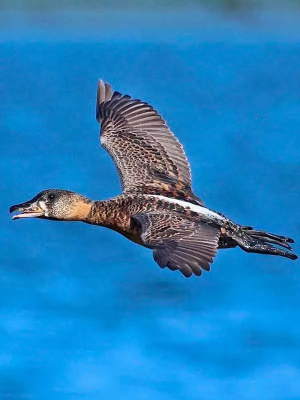
One of the most fascinating bird species found in this area is the Shoebill (Balaeniceps rex). It is a rare bird, but its presence has been recorded in this part of Tanzania. However, the information about the local population is outdated, so it would be interesting to verify the existence of Shoebills in these marshes.
In the vast expanses of Kigosi and Moyowosi, you can encounter remarkable birds such as the Great Snipe (Gallinago media), Wattled Crane (Grus carunculata), and Saddle-billed Stork (Ephippiorhynchus senegalensis) - the largest of all stork species. Saddle-billed Storks are not only visually striking with their expressive appearance, but are also distinct in their flying pose. Experienced birdwatchers can easily identify a flying Saddle-billed Stork from afar by its unique pose of lowering its heavy beak, which makes it unmistakable among other birds.

Thank you for reading our piece on the amazing birds of Western Tanzania! For a complete overview of all the country's most important birdwatching areas, check out our overview article "Tanzania. Top 10 Birdwatching Locations".
All content on Angelino Adventures is created with expert insights and thorough research, in line with our Editorial Policy.


Want to know more about Tanzania adventures?
Get in touch with our team! We've explored all the top destinations across Tanzania. Our Kilimanjaro-based adventure consultants are ready to share tips and help you plan your unforgettable journey.
 Tanzania Safaris
Tanzania Safaris
 Kilimanjaro and other mountains
Kilimanjaro and other mountains
 About Tanzania
About Tanzania
 Birdwatching in Tanzania
Birdwatching in Tanzania